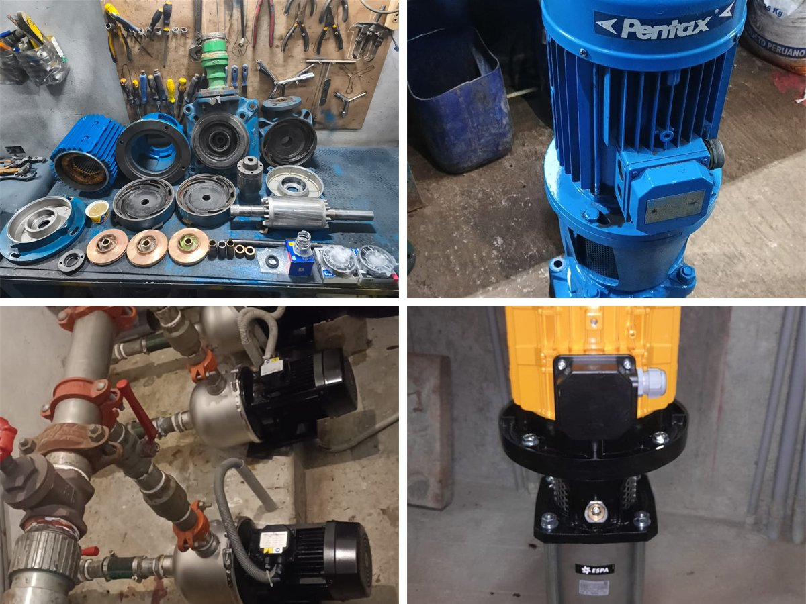
01
Mantenimiento preventivo integral de electrobombas
Inspeccion, limpieza, pruebas de funcionamiento, ajustes y recomendaciones para evitar paradas inesperadas.
EMCSAC Servicios
Mantenimiento preventivo integral para edificios, condominios, empresas e industrias. Atendemos sistemas electricos, electromecanicos, sanitarios, seguridad contra incendios e infraestructura critica con personal tecnico especializado.
Esta propuesta se centra en los servicios reales de EMCSAC: mantenimiento preventivo integral, inspeccion tecnica, ejecucion segura y soporte para sistemas que no pueden fallar en edificios, plantas y espacios de alto transito.
Cubrimos sistemas electricos, electromecanicos, sanitarios, hidraulicos y de seguridad con una presentacion clara para que cada cliente identifique rapidamente lo que necesita.

Inspeccion, limpieza, pruebas de funcionamiento, ajustes y recomendaciones para evitar paradas inesperadas.
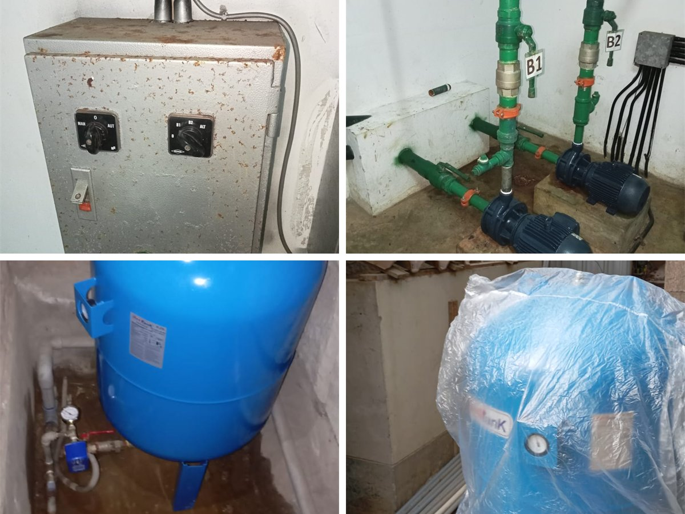
Revision de bombas, presion, tableros, tanques, valvulas y condiciones de operacion del sistema.
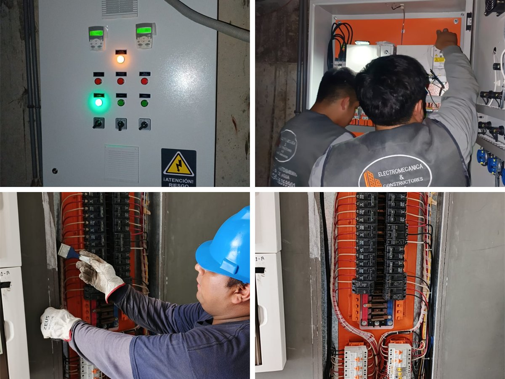
Verificacion de conexiones, limpieza tecnica, mediciones, ordenamiento y control de riesgos electricos.
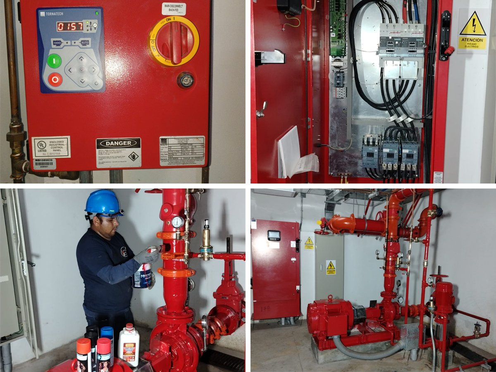
Revision de componentes, pruebas, correcciones preventivas y soporte para mantener el sistema operativo.
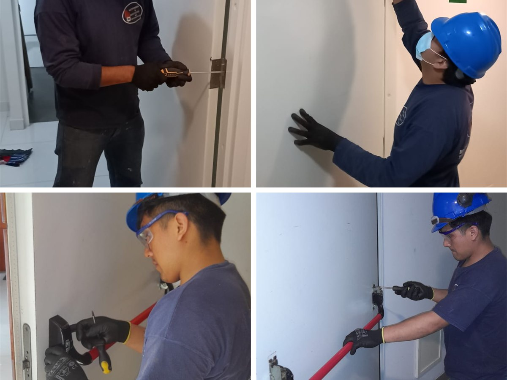
Inspeccion de cierre, bisagras, sellos, accesorios y condiciones de seguridad para rutas de evacuacion.
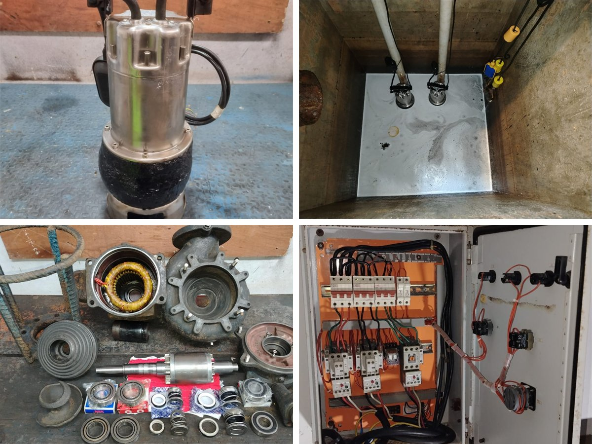
Evaluacion, limpieza, bombeo, control de residuos y acciones preventivas para sistemas sanitarios.
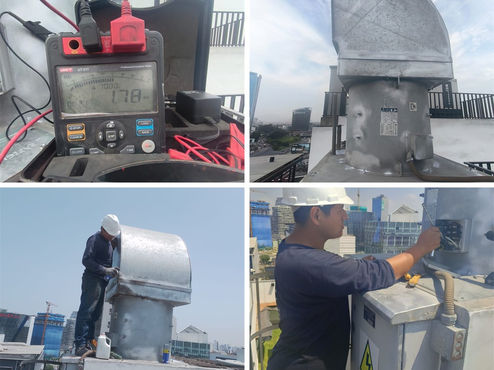
Revision de motores, ductos, sensores, tableros y flujo de extraccion en estacionamientos y ambientes cerrados.
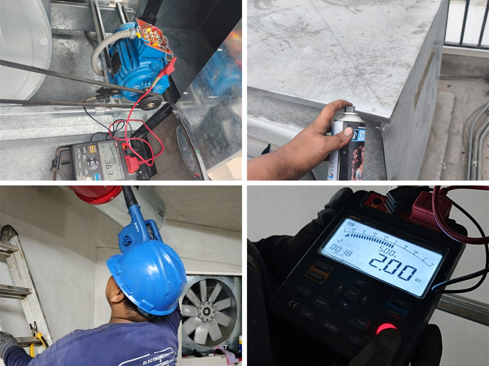
Pruebas de equipos, controles, flujo de aire y condiciones de respuesta para evacuacion segura.
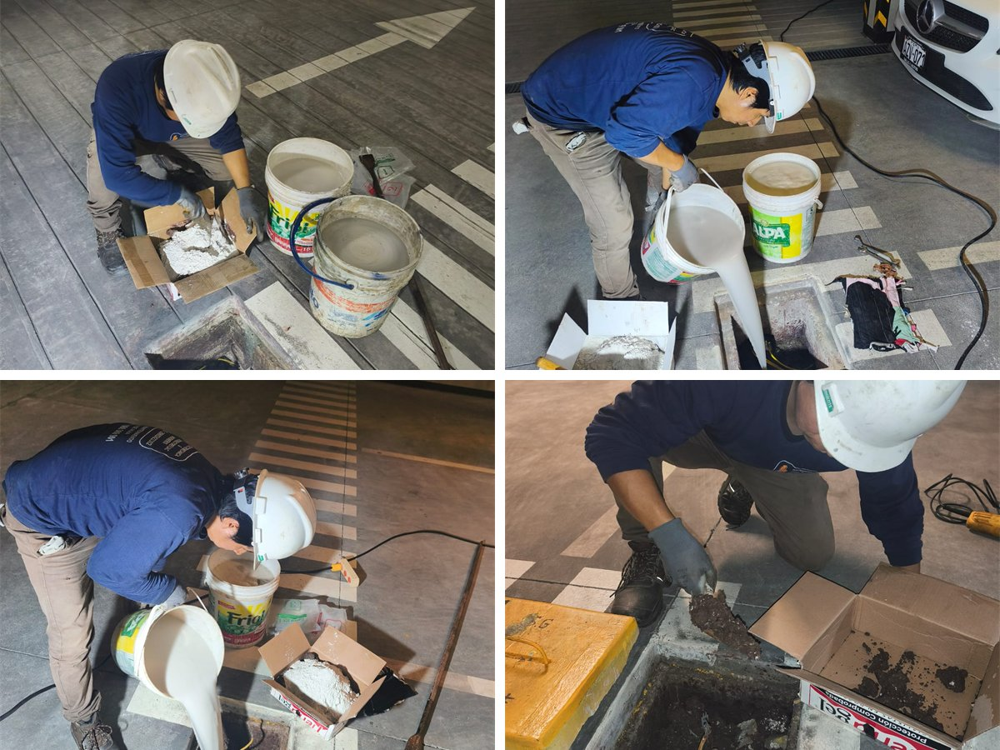
Implementacion, medicion, mantenimiento y mejora de sistemas de puesta a tierra para proteccion electrica.
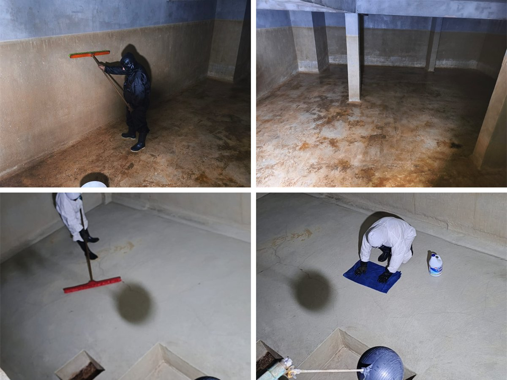
Servicio programado para conservar la calidad del agua, controlar sedimentos y cumplir rutinas sanitarias.
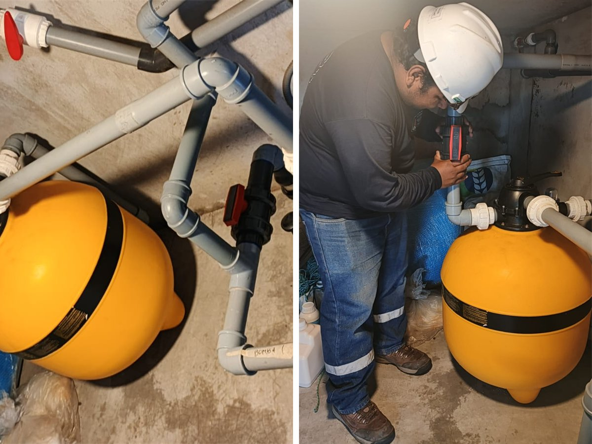
Control de equipos, limpieza, revision hidraulica y mantenimiento de condiciones operativas del sistema.
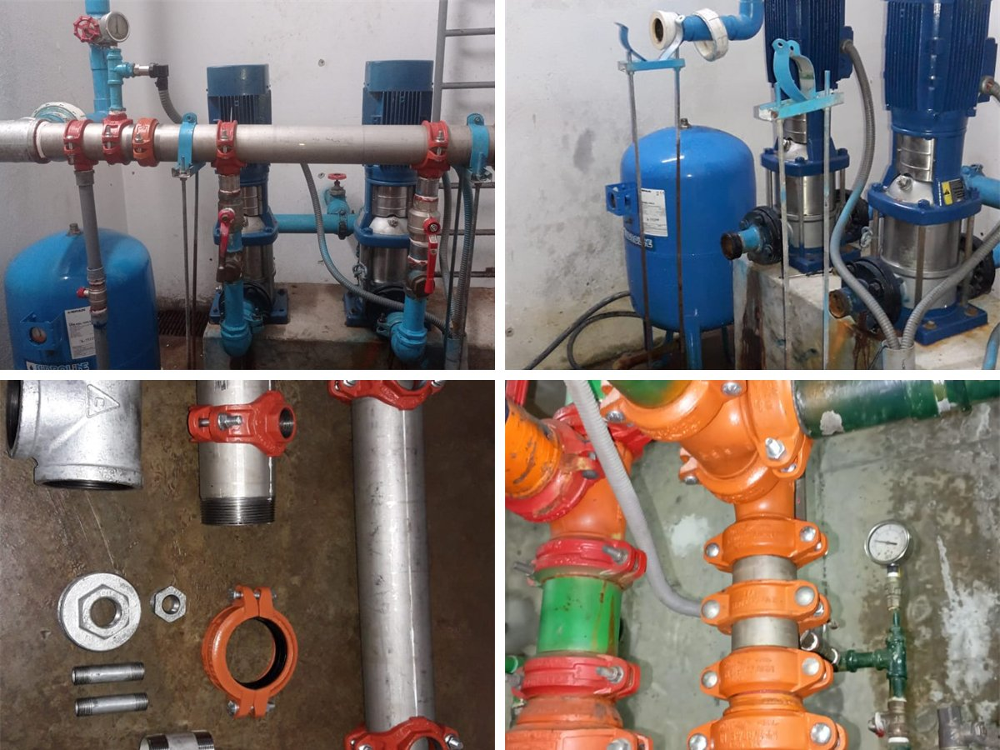
Atencion de obstrucciones, fugas, reparaciones sanitarias y trabajos correctivos para instalaciones de agua y desague.
Cada servicio se trabaja con evaluacion previa, programacion, ejecucion segura y reporte de hallazgos para que el cliente tenga control sobre el estado de sus instalaciones.